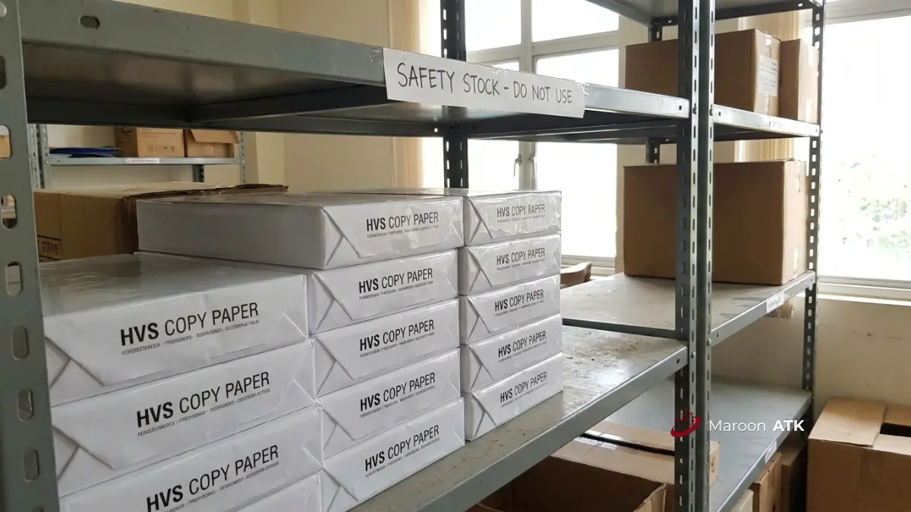

Mengapa Perhitungan Kebutuhan ATK Kantor Itu Penting?
Cara menghitung kebutuhan ATK kantor yang akurat menggunakan rumus: (jumlah pengguna × rata-rata konsumsi) + safety stock − sisa stok gudang, agar perusahaan terhindar dari risiko stockout maupun penumpukan overstock yang memboroskan anggaran operasional.
Banyak divisi umum, purchasing, dan operasional masih menghitung kebutuhan ATK secara kira-kira berdasarkan kebiasaan tahun sebelumnya. Pendekatan intuitif ini rawan meleset, terutama saat jumlah karyawan bertambah, ada penugasan proyek baru, atau saat musim tutup buku tahunan yang meningkatkan konsumsi kertas, toner, dan binder secara signifikan.
Dengan menerapkan rumus inventaris yang konsisten dan terukur, staf procurement dapat membangun template Excel dinamis yang otomatis menghitung ulang kebutuhan setiap bulan hanya dengan memperbarui angka input stok fisik hasil opname.
Apa Rumus Dasar Menghitung Kebutuhan ATK Kantor?
Rumus dasar kebutuhan ATK kantor adalah kuantitas pesanan sama dengan jumlah pengguna dikali rata-rata konsumsi per orang, ditambah safety stock, dikurangi sisa stok fisik gudang. Tiga komponen kunci ini membentuk formula pemesanan yang presisi:
| Komponen Rumus | Metode Pengumpulan Data | Implementasi di Excel |
|---|---|---|
| Rata-rata Konsumsi Bulanan (Monthly Usage) | Diambil dari data historis pemakaian 3 hingga 6 bulan terakhir kalender kerja agar tidak bias oleh bulan anomali. | =AVERAGE(B3:G3) * Jumlah_Karyawan |
| Safety Stock (Stok Pengaman) | Dialokasikan 15% hingga 25% dari total konsumsi bulanan khusus barang cepat habis (fast-moving). | =Monthly_Usage * 20% |
| Sisa Stok Fisik Gudang | Jumlah persediaan aktual di lemari penyimpanan berdasarkan verifikasi fisik (stok opname), bukan sekadar angka sistem. | Kolom Input Manual (Hasil audit fisik mingguan/bulanan) |
Di dalam template Excel, ketiga komponen ini cukup disusun dalam kolom berdampingan, sementara kolom Quantity to Order (QTO) diisi formula otomatis: =MAX(0; (Monthly_Usage + Safety_Stock) - Sisa_Stok).
Bagaimana Cara Menentukan Re-Order Point (ROP) ATK Kantor?
Re-Order Point ATK kantor adalah titik stok minimum yang menandakan kapan pesanan ulang harus dilakukan kepada supplier, dihitung dari rata-rata konsumsi harian dikali lead time vendor ditambah safety stock.
Formula Matematis Re-Order Point:
ROP = (Rata-rata Konsumsi Harian × Lead Time Vendor) + Safety Stock
ROP sangat penting karena rumus kuantitas pesanan bulanan saja tidak memberi tahu tanggal ideal untuk menerbitkan Purchase Order (PO). Jika lead time pengiriman vendor adalah 3 hari kerja, sedangkan ATK baru dipesan saat stok gudang sudah nol, operasional kantor akan mengalami kelumpuhan (stockout) selama menunggu proses pengantaran kurir.
Bagaimana Contoh Perhitungan Kebutuhan ATK per Kategori Barang?
Contoh perhitungan kebutuhan ATK per kategori barang membantu menerjemahkan rumus umum menjadi angka nyata untuk barang fast-moving hingga slow-moving:
- Kertas HVS A4 & F4: Konsumsi harian staf operasional berkisar 10–25 lembar, sedangkan staf finance atau legal sekitar 40–60 lembar. Simulasi untuk 50 karyawan dengan rata-rata 15 lembar/hari menghasilkan konsumsi harian 750 lembar, atau 16.500 lembar/bulan (22 hari kerja = 33 rim). Ditambah safety stock 20% (7 rim), kebutuhan total adalah 40 rim. Jika sisa stok gudang 8 rim, kuantitas pesanan bulan tersebut adalah 32 rim.
- Pulpen & Spidol: Estimasi konsumsi berkisar 1–2 batang per staf per bulan. Untuk 50 karyawan, rata-rata konsumsi 60 pcs/bulan ditambah safety stock 20% (12 pcs), menghasilkan target pemesanan sekitar 6 box (72 pcs).
- Toner Cartridge Printer: Page yield standar toner laserjet berkisar 1.500 hingga 2.500 halaman cetak. Jika konsumsi kantor mencapai 30 rim (15.000 lembar/bulan), kebutuhan toner cartridge berkisar 6 hingga 8 unit per bulan.
- Map Arsip atau Ordner: Kategori ini bersifat slow-moving dan dihitung berdasarkan jumlah map transaksi arsip baru per divisi per bulan, ditambah buffer 10% untuk mengganti map lama yang rusak.

Tumpukan kertas HVS tertata rapi di rak gudang inventaris sebagai cadangan safety stock guna menghindari kelangkaan kertas di masa sibuk kerja.
Bagaimana Cara Menyusun Budget ATK Tahunan?
Budget ATK tahunan disusun dengan mengalikan jumlah karyawan, estimasi biaya ATK per orang per bulan, dan 12 bulan, kemudian ditambah kebutuhan pengarsipan tahunan dan buffer darurat:
Budget ATK Tahunan = (Jumlah Karyawan × Estimasi Biaya/Orang/Bulan × 12) + Kebutuhan Arsip Tahunan + Buffer Darurat 10–15%
Sebagai gambaran umum di Indonesia, anggaran ATK per karyawan per bulan berkisar antara Rp15.000 hingga Rp75.000, tergantung intensitas digitalisasi kantor. Kantor yang masih bertumpu pada dokumentasi fisik berada di rentang atas, sedangkan kantor yang sudah mengadopsi paperless berada di rentang bawah.
Karena harga aktual di pasaran bergantung pada spesifikasi merek, volume pesanan kartonan, dan lokasi pengiriman, penyusunan budget resmi sebaiknya dikonfirmasi langsung ke vendor seperti MAROON ATK untuk memperoleh Surat Penawaran Harga (SPH) resmi.
Apa Kesalahan Umum saat Menghitung Kebutuhan ATK Kantor?
Tiga kekeliruan fatal yang paling sering terjadi dalam manajemen inventaris perkantoran:
- Melewatkan Stok Opname Fisik: Hanya percaya pada angka saldo di spreadsheet tanpa mencocokkan fisik di gudang, padahal barang sering tercecer atau rusak tanpa tercatat.
- Menyamaratakan Persentase Safety Stock: Menetapkan persentase yang sama (misal 20%) untuk semua barang, padahal barang fast-moving (kertas/tinta) butuh buffer lebih tinggi daripada ordner atau gunting.
- Mengabaikan Lead Time Vendor: Tidak memasukkan waktu kirim supplier ke rumus ROP, sehingga Purchase Order baru diterbitkan saat barang sudah benar-benar habis.
Bagaimana Strategi agar Belanja ATK Tidak Overbudget?
Terapkan tiga pilar efisiensi anggaran berikut untuk menjaga belanja rutin tetap terkendali:
- Beli Secara Grosir atau Kartonan: Pembelian eceran mendadak membuat biaya membengkak hingga 50–100%, sedangkan kontrak pembelian kartonan berkala memberikan diskon kuantitas yang substansial.
- Sistem 1-for-1 Exchange: Alat inventaris menengah seperti stapler, kalkulator, dan gunting baru hanya diberikan jika karyawan menyerahkan unit lama yang rusak guna mencegah klaim berlebih.
- Terapkan Metode FIFO (First In, First Out): Gunakan barang yang dibeli lebih dulu agar cairan tinta, lem, dan spidol tidak kedaluwarsa atau mengering di gudang.
Selain alat tulis habis pakai, efisiensi operasional kantor juga sangat dipengaruhi oleh kenyamanan ruang kerja dan sarana rapat modern. Perusahaan yang sedang merefresh interior dapat meninjau katalog furniture kantor ergonomis dan integrasi interactive smart board untuk mewujudkan fasilitas kerja terpadu satu pintu bersama MAROON ATK.
Bagaimana Peran Dokumen Legal dalam Pengadaan ATK Instansi?
Dokumen legal seperti Surat Penawaran Harga (SPH), spesifikasi teknis barang, dan faktur pajak PPN 11% mutlak diperlukan agar pengadaan ATK di instansi pemerintah, BUMN, sekolah, maupun korporat swasta dapat dipertanggungjawabkan secara akuntabel.
Instansi pemerintah umumnya membutuhkan integrasi melalui portal pengadaan resmi seperti LPSE atau SIPLah, sedangkan korporat swasta menekankan e-Faktur Pajak resmi untuk rekonsiliasi keuangan. Menurut pedoman kebijakan LKPP, kelengkapan dokumentasi administratif vendor merupakan penentu kelancaran pencairan anggaran belanja operasional.
Pertanyaan yang Sering Diajukan (FAQ)
Kuantitas pesanan dihitung dari jumlah pengguna dikali rata-rata konsumsi per orang, ditambah safety stock, dikurangi sisa stok fisik gudang.
Safety stock umumnya dialokasikan 15 persen hingga 25 persen dari total konsumsi bulanan, terutama untuk barang fast-moving seperti kertas dan tinta.
ROP adalah titik stok minimum yang menandakan kapan harus memesan ulang, dihitung dari rata-rata konsumsi harian dikali lead time vendor ditambah safety stock.
Anggaran ATK di Indonesia umumnya berkisar Rp15.000 hingga Rp75.000 per karyawan per bulan tergantung intensitas digitalisasi kantor.
Kesalahan umum adalah tidak melakukan stok opname fisik sebelum memesan dan hanya mengandalkan data di software tanpa verifikasi lapangan.

Asher Angelica
Praktisi procurement korporat dan konsultan tata kelola inventaris B2B di Indonesia. Berpengalaman membantu ratusan perusahaan swasta dan instansi pemerintah dalam optimasi anggaran ATK, sistem pergudangan FIFO, dan pengadaan perlengkapan kantor satu pintu.